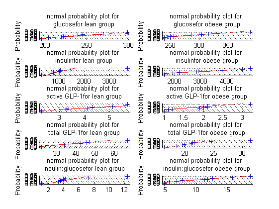
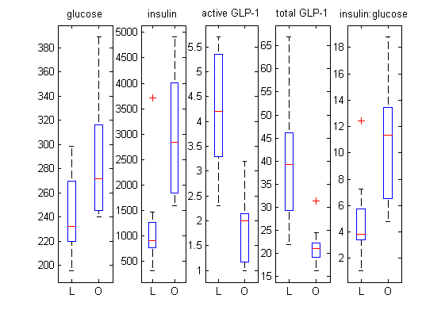
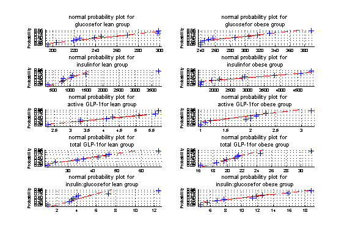
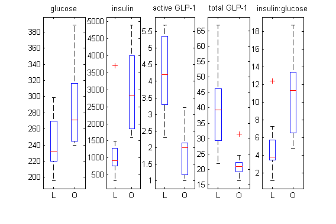

Contents
Initial configuration
close all
clear all
path(path,'./support_scripts/')
[metaboliteFileName, otuFileName] = fileNameCheck('results2.txt', 'otu_table3.txt');
[mconditionStr, metaboliteName, metabolite] = separateMetaboliteVars(metaboliteFileName);
for i=1:59
metabolite(27,i)=metabolite(18,i)/metabolite(1,i);
end
metaboliteName{1} = 'glucose';
metaboliteName{18} = 'insulin';
metaboliteName{27}='insulin:glucose';
[norm, maverages, mstderrors, mcategory] = metaboliteBasicstats(metabolite,mconditionStr);
Generate stats and graphs between lean and obese controls
variableIndex = [1 18 25 26 27];
logswitch = [0 0 0 0 0];
groups = [1 2];
horizontal=1;
[h1, hs1] = normalisationTest(variableIndex, mcategory, norm, metaboliteName, logswitch, groups, horizontal);
[pvalues, string_answers, h2, hs2] = generateBoxPlotsAndTtest2PValue(variableIndex, mcategory, metaboliteName, logswitch);
h1 =
1
'glucose Lean 0.87055'
'glucose Vehicle 0.61212'
'insulin Lean 0.33031'
'insulin Vehicle 0.90642'
'active GLP-1 Lean 0.98174'
'active GLP-1 Vehicle 0.88755'
'total GLP-1 Lean 0.89778'
'total GLP-1 Vehicle 0.40209'
'insulin:glucose Lean 0.28108'
'insulin:glucose Vehicle 0.90987'
h2 =
2
'glucose between the Lean group and the Vehicle group: 0.03489'
'insulin between the Lean group and the Vehicle group: 0.0091623'
'active GLP-1 between the Lean group and the Vehicle group: 0.00017518'
'total GLP-1 between the Lean group and the Vehicle group: 0.0021999'
'insulin:glucose between the Lean group and the Vehicle group: 0.014016'
 
Final formatting and save to pdf file
figure(h1)
axesHandles = get(gcf,'children');
set(axesHandles,'fontsize', 5)
for i=1:length(axesHandles)
title = get(axesHandles(i), 'title');
set(title, 'fontsize', 7)
ylabel(axesHandles(i),'Probability')
end
figuresize(15, 10, 'centimeters')
saveas(gcf, 'pdf_figures/model_validation_diabetic_markers_normalisation_test', 'pdf')
figure(h2)
figuresize(15, 10, 'centimeters')
saveas(gcf, 'pdf_figures/model_validation_diabetic_markers', 'pdf')
mmn =
-1
mmn =
-1
 